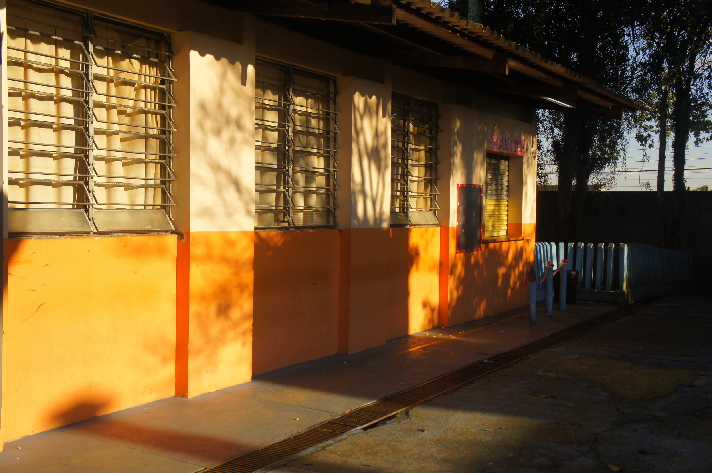
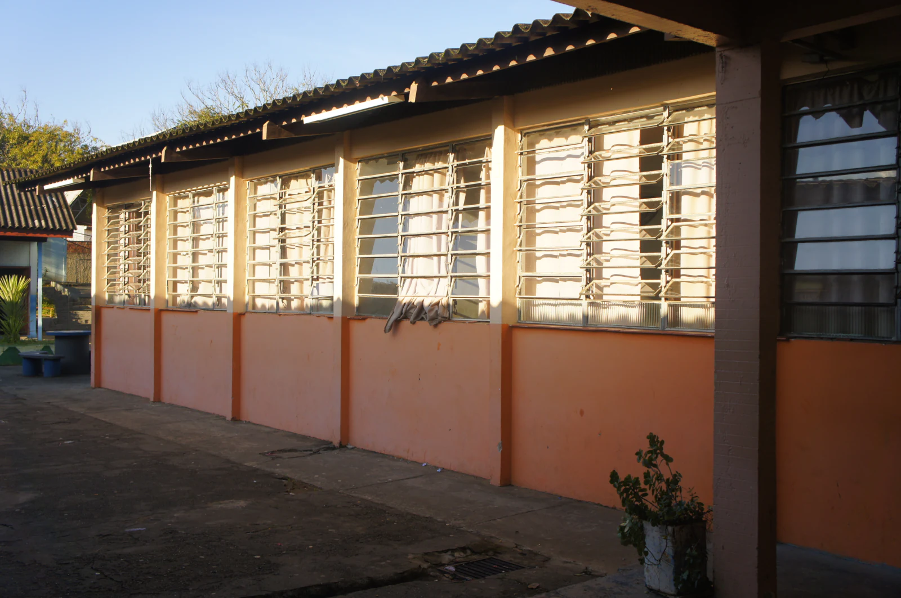

01
Ciência e pesquisa
Em 2024, o programa Little Scientist reuniu 30 estudantes do Ensino Médio em cerca de 12 projetos sobre experimentação, pesquisa e questões ambientais.

Colégio Estadual Euzébio da Mota
Integrante da Rede Estadual de Ensino do Paraná, o Colégio Estadual Euzébio da Mota atende estudantes do Ensino Fundamental e do Ensino Médio no bairro Boqueirão, em Curitiba.
Fundada em 1962 como uma pequena Escola Isolada, a instituição acompanhou a expansão da educação pública na região. Ao longo das décadas, ampliou sua estrutura, sua oferta de ensino e sua presença na comunidade até assumir a identidade que mantém atualmente.

Nossa história
Estes são alguns dos momentos que marcaram a história da escola no Boqueirão.
Uma Escola Isolada começa a funcionar em prédio cedido pela COHAPAR ao Estado do Paraná.
O Decreto Governamental nº 18.441 oficializa a denominação Casa Escolar.
A instituição passa a funcionar como Grupo Escolar.
O Decreto nº 2.840 oficializa o nome Escola Estadual “Euzébio da Mota”.
Em 18 de abril, é inaugurado o prédio onde a escola funciona atualmente.
Começa a ampliação gradual da oferta dos anos finais do Ensino Fundamental.
A implantação do Ensino Médio consolida a denominação Colégio Estadual Euzébio da Mota.
Além da sala de aula
Projetos de ciência, leitura, teatro e preparação profissional também fazem parte da experiência dos estudantes.
01
Em 2024, o programa Little Scientist reuniu 30 estudantes do Ensino Médio em cerca de 12 projetos sobre experimentação, pesquisa e questões ambientais.
02
Criada em 2016, a Gibiteca atendia cerca de 900 alunos em 2017 e aproximava os estudantes da leitura e da cultura.
03
A peça “A culpa não é sua” foi apresentada em cerca de 20 escolas. Outras ações abordaram liderança, comunicação e preparação profissional.
Nossa identidade
A escola combina ensino, convivência e participação no trabalho diário com os estudantes, as famílias e os profissionais.
Oferecer educação pública e ajudar os estudantes a construir conhecimento, autonomia e participação responsável.
Compromisso educacionalNo dia a dia, a convivência busca manter respeito, diálogo, responsabilidade, inclusão e cooperação.
Convivência escolarA direção e a equipe pedagógica cuidam da organização escolar, orientam os estudantes e conversam com as famílias.
Informações na secretariaSalas de aula, ambientes de estudo e espaços de convivência são usados nas atividades pedagógicas e nos projetos do colégio.
Ambientes de aprendizagemSe houver uma necessidade específica de acesso ou atendimento, informe a equipe para receber orientação antes da visita.
Orientação individualO colégio atende Ensino Fundamental, Ensino Médio e EJA. Para saber os horários de cada modalidade, consulte a secretaria.
Consulte a secretariaPresente e futuro
Desde 1962, o Euzébio da Mota mudou junto com o Boqueirão. Hoje, a escola reúne ensino, ciência, cultura e participação estudantil em diferentes etapas da educação básica.
Conheça os projetos